UR Skins
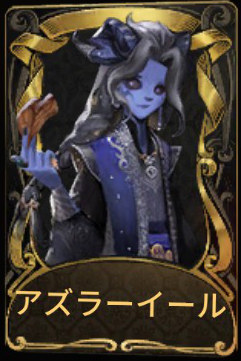
アズラーイール
この季節一枚目の落ち葉を持って、彼は空から舞い降りた。
(ショップ)
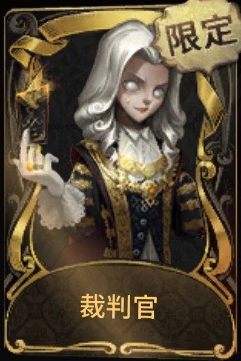
裁判官 (限定)
正義？公平？それは枷を掛けられる前に考えるべきことだ。
(S13・真髄2)
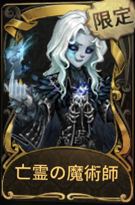
亡霊の魔術師 (限定)
あの若者が神殿へと足を踏み入れた時、彼は同じくらい神託の顕現に期待していた。神秘的な予言を経て、邪神の子がついに浮かび上がる瞬間を。
(S27・真髄2)
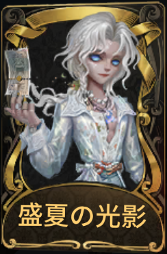
盛夏の光影
カメラは体温も脈拍も捉えられない。思い出と共に盛夏の光影を切り取っても、結局冷たい写真しか生まれない。
(2025・夏休みショップ)
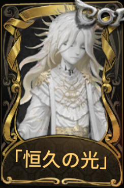
「恒久の光」
「新世界の印」：彼の国は、安定した規律のもとで保たれていた。繰り返される黄金時代には、過去に対する「神」の愛と懐旧が反映されているのだろうか。
(CALL OF THE ABYSSⅨ)
SSR Skins
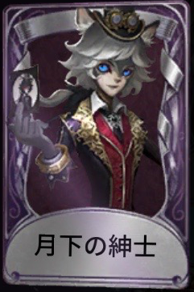
月下の紳士
夢の中の月光は優しく柔らかい。ただ、彼と一曲踊ってくれる相手はいないようだ。
(S3・真髄3)
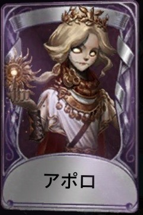
アポロ
あなたへの光と希望は私だけが与えられる。私だけが奪える。
(S6・真髄１)
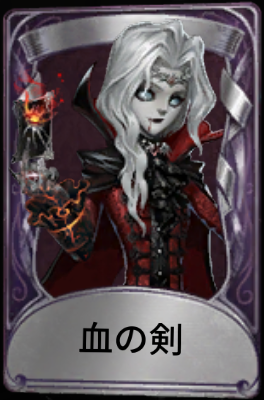
血の剣
魔典の力を略奪するために裏で行動し、鏡から得た情報を通して古城の残局を把握した。しかし、抱擁の出現を予想できず、彼は手に入れたばかりの物が奪われていくのを見ているしか術がなかった。だが、次の獲物は決して手放さない。
(S9・真髄1)
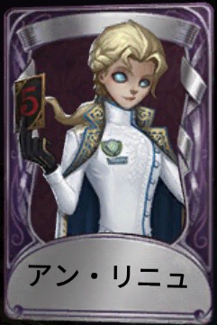
アン・リニュ
幻夢を刺し壊す準備はできたか？
(S12・真髄2)
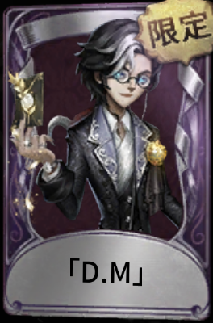
「D.M」(限定)
彼の「真摯」に惑わされるな！（衣装、3周年祭典で獲得）
(3周年・オフラインパック)
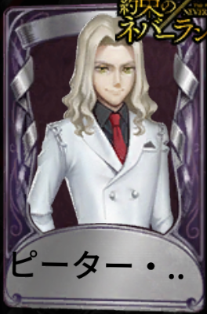
ピーター・ラートリー
ピーター・ラートリーの服装。
(約束のネバーランドコラボ真髄2)
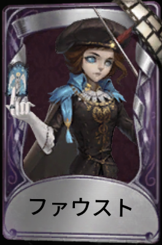
ファウスト
一切の無常なるものはただ幻影たるに過ぎず。
(2021・演繹の星)
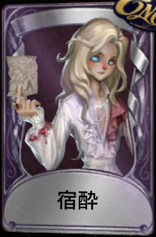
宿酔
ワインに染められたバラは、まるで何かの予兆のようだ。酔いが醒める頃、真っ先に災いの到来に気付くのは誰だろうか？
(期間限定ショップ)
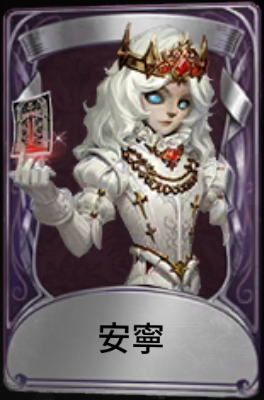
安寧
安寧の世界は、往々にしてけたたましい魂を育む。
(S26・真髄1)
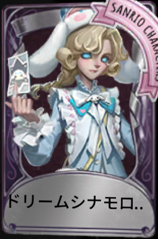
ドリームシナモロール
IdentityⅤ×サンリオキャラクターズ コラボ衣装
(サンリオコラボショップ)
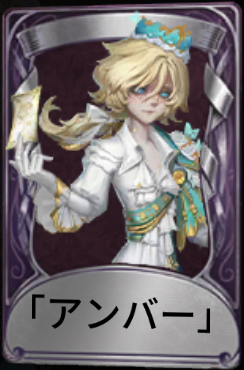
「アンバー」
滴り落ちる甘い蜜が捕食者の姿をその瞬間に留め、息が詰まるような甘美に封じ込めた。
(2024・ハロウィンイベント)
SR Skins
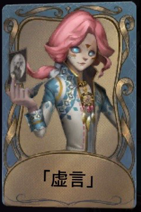
「虚言」
私の言葉は、全て私の本心だ。…私に、本心と言うものがあればの話だが。
(S5・真髄2)
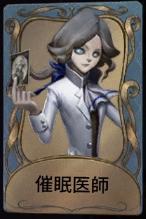
催眠医師
催眠により患者の弱みや歪みの様を集める。患者に対して無意味な同情心を抱くのはロールシャッハ医師だけだ…あいつをあの虫ケラたちの仲間に仕立て上げてやろう！
(S6・真髄2)
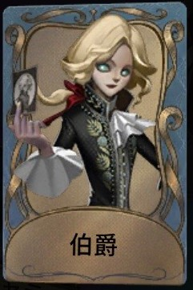
伯爵
永遠に壁に掛けられたくないのなら、彼への態度には気を付けることだ。
(S7・真髄2)
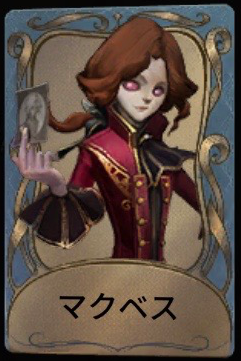
マクベス
どれほど長く暗くても、明けない夜はない。――『マクベス』
(イベントショップ)
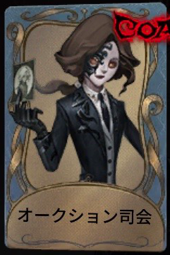
オークション司会
最も熱狂的な崇拝者として、オークション司会は異界行者の作品を拡散し続け、深淵の華麗さと新奇さを世界中に広めようとしていた。
(CALL OF THE ABYSSⅢ)
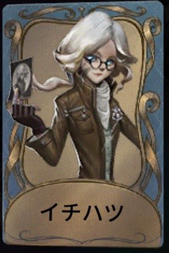
イチハツ
あの砂漠の冒険は成功したとは言えないが、少なくとも例のノートの価値は証明された。私はより高い報酬を出し、より良いアシスタントを雇った。
(S10・真髄2)
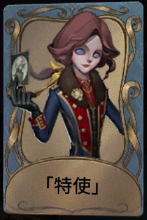
「特使」
親王殿下、善良な人の方が貪欲になりやすい。これはあなたが学ぶべき最後の授業だ。
(S11・真髄3)
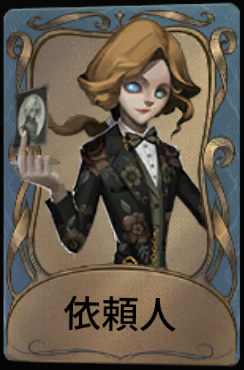
依頼人
第1問、狩りの楽しみは追撃의過程によるものか、獲物そのものによるものか。
(グローバル版2周年イベント)
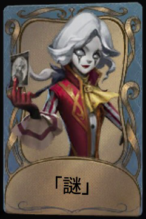
「謎」
「龍を殺す方法を知っていますか？烈火の中でその首を切り落とし、最古の壁に嵌めるのです。」
(グローバル版3周年イベント)
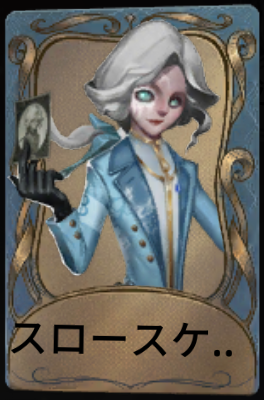
スロースケートの種
5つの小さな氷の人形。いがみ合い、疑い合う。言葉の端々から疑いを招き、5つは4つになった。
(S20・真髄1)
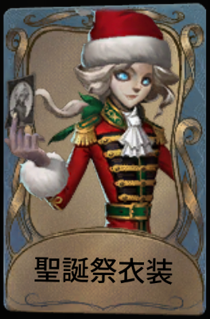
聖誕祭衣装
クリスマスの雪夜、この時だけ、町は写真の中と同じような白黒の光景を見せてくれる。
(2022・クリスマスイベント)
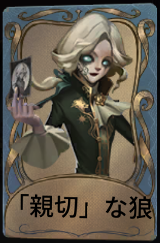
「親切」な狼
籠の外に見える彼の眼差しが計算によるものか、心からの関心か、もはや分からない。
(S32・真髄2)
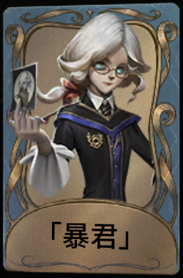
「暴君」
規則は人を縛り、人を守る。
(期間限定ショップ)
R Skins

血影
瞬く間に終わってしまう歓喜は致命的な毒となる。しかし、誰がこのロマンスを拒めるだろうか？
(S4・推理の径)

夕焼け
街中を行き交う人々に、夕日の余韻を楽しんでもらうのも悪くはないだろう。
(閲歴得点)

潭の影
静かな水面に映し出された来客の顔は、潭の水の冷たさを隠す。
(S11・推理の径)